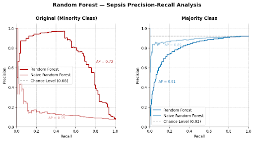

A path signature summarizes a multi-dimensional path as a set of numbers. The first level records the total change in each variable. Higher levels capture how variables move together and in what order, so it can tell apart two paths with the same start and end points.
Overview
Time-series data often has several variables changing at once, and the order of those changes can matter. Path signatures turn that movement into numerical features a machine learning model can use. We applied them to a classification problem where the events of interest are rare.
Project Details
Sepsis is a life-threatening condition affecting millions of ICU patients annually. Early detection is critical since each hour of delay increases mortality risk. In the project's first semester, we investigated the relationship between multi-dimensional patient hospital data and sepsis outcome.
Because one class is much rarer than the other, a model can seem accurate while missing most of the cases that matter.
- Engineered path signature features from multi-dimensional time series.
- Conducted analysis comparing different time windows.
- Trained Random Forest and Logistic Regression classifiers.
The classifiers achieved 0.72 average precision on minority-class detection. Average precision measures how well a model finds rare cases without raising too many false alarms, which makes it more informative than accuracy for imbalanced data.

We are extending the method to decentralized finance (DeFi) by comparing signature-based similarity between liquidity pool paths around security events, with the goal of detecting early warning patterns.
- Python
- Scikit-learn